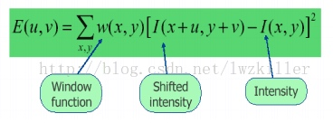
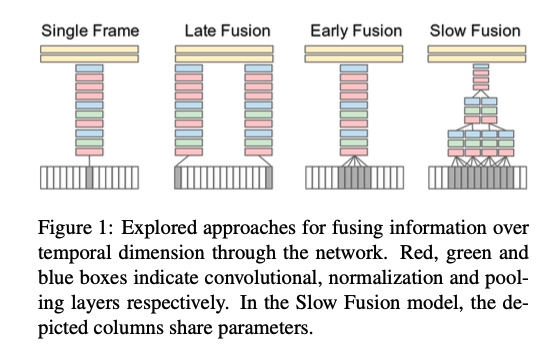
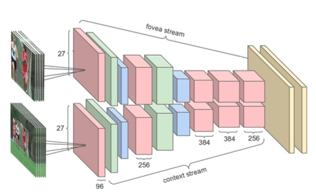
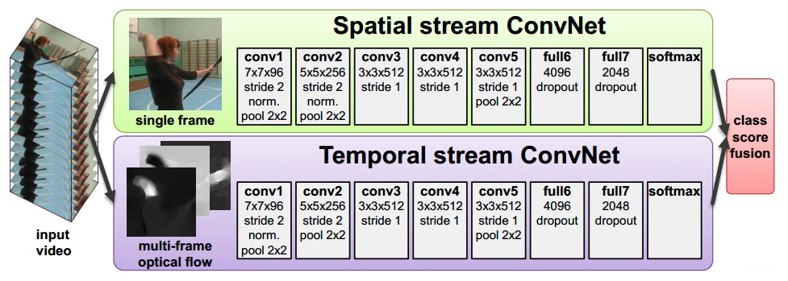
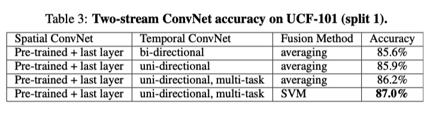
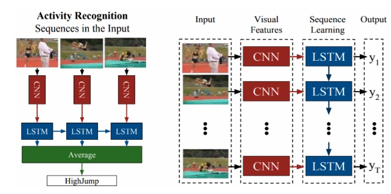
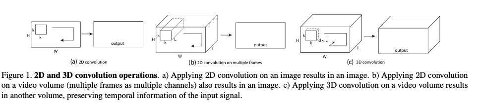
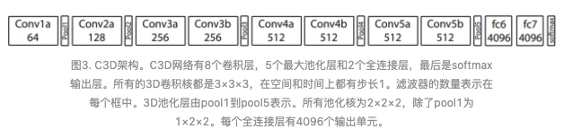
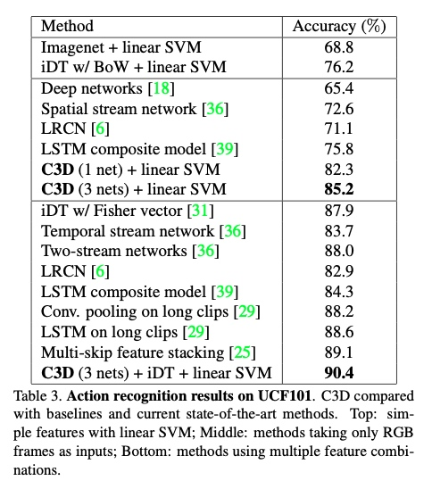
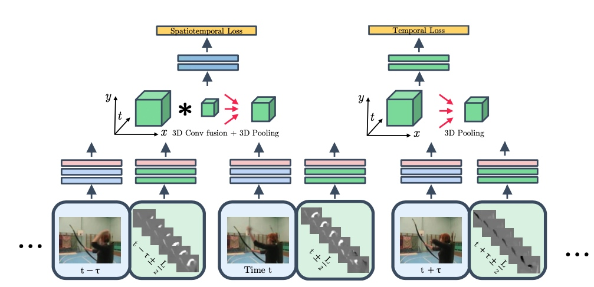

【工具】MMlab—mmdetection
本来主要是看 mmskelton的，后来发现其依赖mmdetection，于是将这几个都看了下。
1. mmdetection
1 安装
进行目标检测:
配置要求
Linux or macOS (Windows is not currently officially supported)
Python 3.6+
PyTorch 1.3+
CUDA 9.2+ (If you build PyTorch from source, CUDA 9.0 is also compatible)
GCC 5+
mmcv
安装步骤：
# 进入自己的conda环境
conda install pytorch torchvision -c pytorch # 注意版本
git clone https://github.com/open-mmlab/mmdetection.git
cd mmdetection
#
pip install -r requirements/build.txt
pip install "git+https://github.com/cocodataset/cocoapi.git#subdirectory=PythonAPI"
pip install -v -e . # or "python setup.py develop"
注意：git commit id将在步骤d中写入版本号，例如0.6.0 + 2e7045c。该版本还将保存在经过训练的模型中。建议您每次从github提取一些更新时都运行步骤d。如果修改了C ++ / CUDA代码，则此步骤为强制性的。
按照上述说明，mmdetection将安装在dev模式下，对代码进行的任何本地修改都将生效，而无需重新安装它（除非您提交了一些提交并希望更新版本号）。
如果要使用opencv-python-headless而不是opencv-python，可以在安装MMCV之前先安装它。
方法二:docker
git clone https://github.com/open-mmlab/mmdetection.git
cd mmdetection
sudo docker build -t mmdetection docker/
注意:如果没有gpu，需要将Dockerfile中的 Force_cuda改为0
2.测试demo
- demo/inference_demo.ipynb
from mmdet.apis import init_detector, inference_detector, show_result_pyplot
config_file = 'configs/faster_rcnn/faster_rcnn_r50_fpn_1x_coco.py'
checkpoint_file = 'checkpoints/faster_rcnn_r50_fpn_1x_coco_20200130-047c8118.pth'
## checkpoint_file = 'https://open-mmlab.s3.ap-northeast-2.amazonaws.com/mmdetection/v2.0/faster_rcnn/faster_rcnn_r50_fpn_1x_coco/faster_rcnn_r50_fpn_1x_coco_20200130-047c8118.pth'
# 这里要注意config_file 和checkpoint_file的匹配
# test a single image
img = 'demo/demo.jpg'
model = init_detector(config_file, checkpoint_file, device='cpu')
result = inference_detector(model, img)
show_result_pyplot(model, img, result)
解释：
- 基本上主要分为这三步吧，init_detector， inference_detector， show_result_pyplot 可以再细看下show_result_pyplot中model的属性，怎么把结果和位置提取出来
mmdet/models/detectors/base.py - 如果本机的环境不好用的话，可以在colab上测试，https://colab.research.google.com/github/open-mmlab/mmdetection/blob/master/demo/mmdet_inference_colab.ipynb#scrollTo=CSDS0SJBWa2l
- 多数时候运行不成功，应该都是环境或者版本不匹配问题
3.应用
code详解
(1) demo里用的是coco的分类
mmdet.models.detectors # 是基础的各种检测方法
mmdet.models.detectors.base.show_result中可以看到三步骤中二的返回结果是怎么解析的
result格式: list[array([xmin, ymax, xmax, ymin, 置信度])]
mmdet.core.evaluation.class_names 中包含不同数据集定义的get_classes具体的类别
(2)替换自己的数据分类
数据集 & 工具
1.数据集-动态视频
| 数据 | 基本情况 | 链接 |
|---|---|---|
| HMDB-51 | 51个类别，6766个视频 | https://serre-lab.clps.brown.edu/resource/hmdb-a-large-human-motion-database/#dataset |
| UCF-101 | 101类别，13320个短视频 | https://www.crcv.ucf.edu/research/data-sets/ucf101/ |
| Kinetics-700 | 650000个，用于ActivityNet比赛 | https://deepmind.com/research/open-source/open-source-datasets/kinetics/ |
| ava | google。多人不同动作数据集 | https://research.google.com/ava/explore.html |
| ActivityNet |
HMDB-51: 压缩包大概6G，主要包含类别
- 常见面部动作（smile，laugh，chew，talk）
- 复杂面部动作
- 直梯动作
- 多人交互


UCF-101: 包含的数据类型
- 人物交互
- 人体动作
- 人人交互
- 乐器演奏
- 体育运动
ava-action：
包含了80个原子动作(比如走路，握手。。) 数据包含三部分:
- person pose：
- 人-物交互
- 人人交互
https://research.google.com/ava/explore.html
一共430个video，其中235个train， 64个validation，131 test。 每个视频是15min，每1s钟进行以此标注。
有一个机遇faster-rcnn的预训练模型。 tensorflow的目标检测api https://github.com/tensorflow/models/tree/master/research/object_detection#tensorflow-object-detection-api
数据格式 ava_train_v2.2.csv
video_id, middle_frame_timestamp, person_box, action_id, person_id
toread
https://www.jianshu.com/p/a4cc71126796
2.数据集-静态图像
https://blog.csdn.net/lgk1996/article/details/79814888
| data | basic description | link |
|---|---|---|
| Stanford40 Dataset | 斯坦福-李飞飞团队穿件，包括40中不同的行为类别，9532张图片 | http://vision.stanford.edu/Datasets/40actions.html |
| MPII Pose Dataset | 主要是human pose estimation |
Stanford40 Dataset: runing, phoning, play,drinking等, taking photos
B. Yao, X. Jiang, A. Khosla, A.L. Lin, L.J. Guibas, and L. Fei-Fei. Human Action Recognition by Learning Bases of Action Attributes and Parts. Internation Conference on Computer Vision (ICCV), Barcelona, Spain. November 6-13, 2011.
MPII Pose Dataset

3.工具
常用的工具：
https://zhuanlan.zhihu.com/p/38597956
| tool | 说明 | 语言 | 链接 |
|---|---|---|---|
| openpose | 多人，2D，实时 | python-API | https://github.com/CMU-Perceptual-Computing-Lab/openpose |
| facebook-densePose | mask-RCNN的变体 | github.com/facebookresearch/Densepose | |
| alphaPose | tf, pytorch | ||
| Human Body Pose Estimation | |||
| Deeppose(2014) |
(1)Open-mmlab家族
MMSkeleton
原理的名字叫 st-gcn，后来改为 MMSkeleton
st-gcn: 比较老了 https://hub.docker.com/r/jaehwankimneo/st-gcn
mmskelton: https://hub.docker.com/r/ioir123ju/mmskeleton/tags
python setup.py develop
中间可能会报很多错，需要一步步的改
环境配置http://blog.sina.com.cn/s/blog_679f93560102wpyf.html
安装好mmskelton后，可以选安装mmdetection，这个参照其github上的说明来就行
mmcv
mmcv是一个MMLAB开发的cv的基础工具库，用来支持mmdetection，mmaction等
(2)openpose
运行方式:
- 命令行: ./build/examples/openpose/openpose.bin xxx
- c++接口
- Python接口
docker: docker pull exsidius/openpose
还有在google colab上进行尝试https://github.com/CMU-Perceptual-Computing-Lab/openpose/issues/949#issue-387855863
! apt update
! apt install -y cmake sudo libopencv-dev
! git clone https://github.com/CMU-Perceptual-Computing-Lab/openpose.git
! cd openpose/ubuntu && ./install_cmake.sh && ./install_cuda.sh && ./install_cudnn.sh
! cd openpose && git pull origin master && rm -r build || true && mkdir build && cd build && cmake .. && make -j`nproc`
# example demo usage
!cd openpose && ./build/examples/openpose/openpose.bin --video examples/media/video.avi --write_json output/ --display 0 --render_pose 0
cpu-only的版本：要求8G内存
安装
git clone https://github.com/CMU-Perceptual-Computing-Lab/openpose
cd build/
make -j`nproc`
综述_action recognition

https://zhuanlan.zhihu.com/p/38241179
github: https://github.com/facebookresearch/DensePose
姿态识别
- 动作识别： https://zhuanlan.zhihu.com/p/132673525
- 身份识别
从识别的问题类型上划分的话，主要有这么几类问题
- 手势识别
- action: 短时间的动作识别
- activity：持续时间较长的行为，比如读书，打电话，打球
2 姿态识别方法
参考：
https://zhuanlan.zhihu.com/p/79521655
https://zhuanlan.zhihu.com/p/103566134 通用行为识别
1. 传统的有监督的特征提取方法
在深度学习之前，传统的特征的方法的SOTA是iDT 算法
(1) 时空关键点
即检测视频图形中在时空维度上发生剧烈变化的数据，比如运动的轨迹。常见的方法
- Harris角点检测方法
详细介绍参考https://blog.csdn.net/lwzkiller/article/details/54633670 简单地说：
角点：一般是轮廓之间的交点，视角发生变化时候通常具备比较稳定的性质，该点附近区域的像素点无论在梯度方向上还是其梯度幅值上有着较大变化；

u,v是窗口的偏移量，w(x,y)是窗口函数作为权重
算法的基本思想：找到在任意方向上滑动，偏移较大的位置。
然后统计关键点周围的梯度直方图等视觉特征，
(2)密集轨迹iDT算法(improved Dense Trajectories)
《Dense Trajectories and Motion Boundary Descriptors for Action Recognition》和《Action Recognition with Improved Trajectories》
光流：
HOG：灰度图像梯度的直方图
HOF：光流的直方图
MBH：光流梯度的直方图
2.深度学习方法的探索
因为行为识别需要考虑空间和时间两个维度，所以一开始主要是怎么将时间维度融合进去。比较有突破性的进展有:
(1) Single Stream Network
paper: 2014_Large-scale Video Classification with Convolutional Neural Networks
使用数据：sports-1M,主要是关于人运动的一些video; 后来通过迁移学习将top1和top3layer重训应用到ucf101
- 模型结构

single frame: 单线提取特征，最后再将则合格特征融合在一起
early fusion:将相邻的T个帧的信息合并，在第一层filter的时候进行修改，将filter改为ff3*T的
late fusion: 建立两个single frame，之间共享参数，在第一个全连接层的时候进行融合
slow fusion：有点将前两种方式合并的感觉，如图示
- 效率问题
为了解决效率问题，在具体处理的时候，是将原本的一个网路结构拆分成两个:- context stream: 对原始图像做downsample. n/2
- fovea stream。 只保留图像中间的部分(这个也有本身的原图像有关) 
这样整个的参数减少为原来的1/2
- 效果
模型本身中slow fusion版本最好，整体上要比hand-crafted-feature的结果差。主要原因: 对于运动特征的捕捉不够；数据的丰富性问题
(2)two stream network
paper: Two-Stream Convolutional Networks for Action Recognition in Videos
- model 
包含两个网络分别处理空间和时间维度:
(1)Spatial Net 主要是提取视频的每一帧，其实就是典型的图像分类，可以用图像分类相关的网络结构
(2) temporal net
将提取的光流信息作为输入
multi-task learning
Spatial Net可以用一些预训练的模型，temporal net的输入得是视频。作者用的训练数据集是ucf101和hmdb51，分别有9.5k和3.7k。为了减少过拟合，需要将数据合并成一个。结果

3.深度学习方法
(1) LRCN
paper: Long-term Recurrent Convolutional Networks for Visual Recognition and Description
code: https://github.com/garythung/torch-lrcn
基本思想： 1）不再使用传统的光流方法，而是引入RNN结构；（2）将编码解码结构拓展到视频表征领域；（3）为动作识别提出了一个端到端的训练结构。

如上图所示: 设计的是一种编码-解码 网络，通过cnn进行编码，然后rnn进行解码。
(2) C3D
code: https://github.com/hx173149/C3D-tensorflow
paper: 2014 Learning Spatiotemporal Features with 3D Convolutional Networks
中文翻译 https://www.jianshu.com/p/09d1d8ffe8a4
不同于前面将时间维度融合进去原有的模型中，或者是拆分成一个2d的图像+时间维度，3d卷积直接从3d的角度出发。3d卷积与2d卷积的区别:

a)在一个图像上应用2D卷积会产生一个图像。b)在视频卷上应用2D卷积(多个帧作为多个通道)也会产生一个图像。c)在视频卷上应用3D卷积可产生另一个卷，保留输入信号的时间信息。
3d卷积网络。本文中作者的主要结果是:
- 3d卷积结构普遍比2d卷积结构要好
- 找到了一个表现最好的3x3x3的卷积核，这个特征提取器后来被广泛应用于action detection的基础
网络结构：C3D的网络结构：8个卷积、5个池化、2个全连接，最后是一个softmax输出。所有3D卷积的尺寸都是333、步长为1

实验：
- 卷积核的深度3x3xdi。 不同层均匀深度、不同深度。 通过实验发现3x3x3效果最好
- 作者使用sports-1M数据进行训练，每16帧作为一个片段，16
- 在UCF101上的效果

TSF
two stream fusion, 这个主要是基于two stream，摸底不同的融合方法。 其中作者之一就是前面提出two stream network的Andrew Zisserman
链接: http://www.robots.ox.ac.uk/~vgg/software/two_stream_action/
code: matlab
作者提出视频行为识别的主要难点:1)训练数据量较少， 2)temporal信息提取的不够充分。
接着之前的two stream network的一些问题 1) 融合只在最后一步classification score了 2)
实验的控制因素：
（1）如何将空间和时间融合
可以简单理解之前分两路相当于是认为时间和空间这两个维度独立，然而实际上他们是有交互影响的，所以更好的方法是在layer的时候就能将信息融合。
作者列举的方法有: sum, max, Concatenation, Conv(Concatenation后再做个变换)，在操作的时候需要将两者的维度转成一样的。而不同的组合方法也会显著影响模型的参数数量。
(2) 在哪个layer进行融合
(3) 时间维度怎么融合

作者提出的改进的网络结构如上图，每一部分都有空间(蓝色)和时间(绿色)维度的融合，
另一个问题是融合的时间间隔
TSN
I3D
slowonly
slowfast
CSN
SSN
一个无监督视频特征提取：
Learning hierarchical invariant spatio-temporal features for action recognition with independent subspace analysis
论文资料
https://github.com/jinwchoi/awesome-action-recognition
https://github.com/cbsudux/awesome-human-pose-estimation
toread
https://www.jianshu.com/p/39fe654ed410
[含代码]https://blog.csdn.net/DaGongJiGuoMaLu09/article/details/94628591
Copyright © 2015 Powered by MWeb, Theme used GitHub CSS.